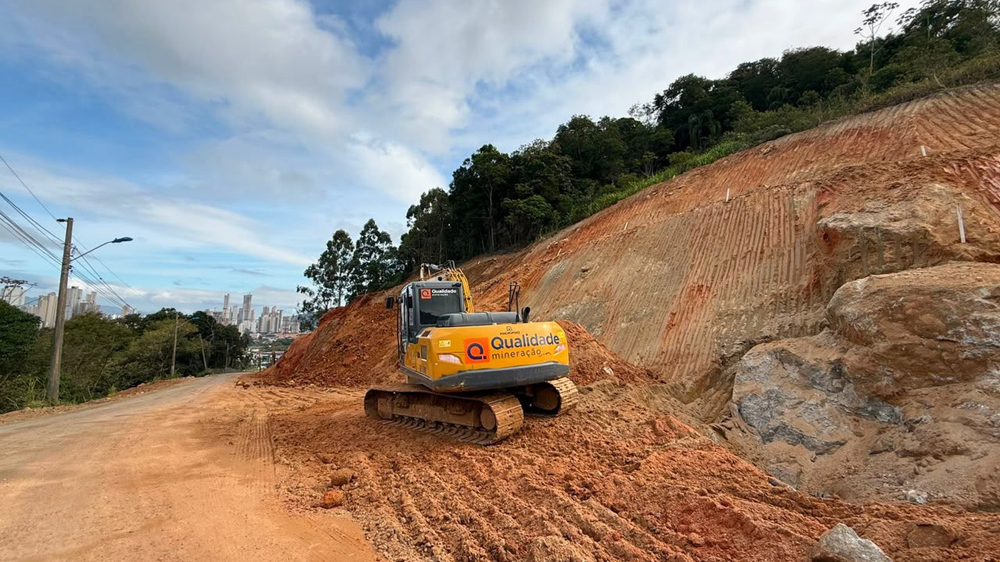

Tijucas · Trânsito
Tijucas · TrânsitoTijucas fecha ruas da Avenida Hercílio Luz para o desfile de 7 de setembro
Outro bloqueio programado na região, este por causa do feriado.
A operação começa às 8h do dia 4. A Prefeitura de Itapema fala em interdição ao longo do dia e não fixa horário de liberação. Equipes ficam no local orientando quem chegar.
Em 30 segundos · Modo de Leitura, formato original Santa Informa
A Prefeitura de Itapema avisou: haverá detonação de rochas no Morro do Encano.
É nesta sexta-feira, dia 4 de setembro, a partir das 8h.
O trânsito no local fica bloqueado enquanto durar o trabalho.
A previsão é de interdição ao longo do dia inteiro.
A via só é liberada depois da detonação e com condição segura para circular.
Não há horário marcado para essa liberação.
A recomendação é programar o deslocamento e usar rota alternativa.
Equipes ficam no local controlando o trânsito e orientando motorista.
A Prefeitura pede atenção à sinalização e às orientações das equipes.
O aviso saiu em 1º de setembro, três dias antes.
InfraestruturaPublicada em Redação Santa Informa

Quem usa o Morro do Encano precisa mudar o roteiro na sexta-feira. A Prefeitura de Itapema comunicou que haverá detonação de rochas na região a partir das 8h do dia 4 de setembro, e que o trânsito no local fica bloqueado enquanto durar o trabalho.
A previsão da Prefeitura é de interdição ao longo do dia. Não é uma parada de meia hora para a explosão e pronto. Segundo o comunicado, a via será liberada assim que a detonação for concluída e houver condições seguras para circulação, e nenhum horário foi fixado para isso. Na prática, quem depende do morro faz melhor tratando a sexta como dia sem passagem por ali.
A recomendação é programar o deslocamento com antecedência e, sempre que possível, usar rota alternativa. Equipes ficam no local para fazer o controle do trânsito e orientar os motoristas. A Prefeitura também pede atenção à sinalização e às orientações dessas equipes durante a operação. O comunicado não indica qual seria a rota alternativa.
A imagem divulgada pela própria Prefeitura ajuda a entender o serviço. Aparece o talude recém-cortado na encosta, o paredão de pedra exposto ao lado da pista e uma escavadeira trabalhando sobre a via, ainda de terra. É um trecho em obra, com a rocha aberta bem na beira do caminho por onde os carros passam.
Fechar uma via inteira numa sexta-feira mexe com entrega, com quem trabalha fora do bairro, com consulta marcada e com quem leva filho na escola. A parte boa é que o aviso saiu com três dias de antecedência, então dá tempo de remarcar o que puder ser remarcado e de sair mais cedo no que não puder. Quem precisar falar com a Prefeitura pode ligar para o (47) 3268-8000, das 12h às 18h, de segunda a sexta.
O resumo de 30 segundos está no topo e a versão completa é o texto acima. Aqui ficam as três leituras da casa sobre o mesmo assunto.
Clara, a otimista
Aviso com três dias de antecedência é o que separa transtorno de dor de cabeça. Dá para remarcar entrega, avisar cliente e combinar carona.
E ter equipe no local orientando faz diferença de verdade. É a diferença entre uma fila organizada e um monte de gente descobrindo o bloqueio de bico no para-choque.
Seu Prudêncio, o criterioso
Merece atenção a ausência de duas informações no comunicado: a rota alternativa recomendada e uma estimativa de horário para a liberação. Dizer apenas que a via abre quando houver condição segura é tecnicamente correto, e ao mesmo tempo deixa o morador sem base para se planejar.
Vale acompanhar também se haverá nova detonação no mesmo trecho. Serviço de corte de rocha raramente termina num dia só, e quem passa por ali ganharia muito com um calendário divulgado de uma vez. Uma sugestão útil: a Prefeitura publicar um aviso curto no fim da sexta dizendo se a via foi liberada. Um parágrafo resolve a dúvida de todo mundo no sábado de manhã.
E é justo reconhecer o cuidado. Avisar antes, colocar equipe no local e assumir que o bloqueio pode durar o dia todo é postura honesta, bem melhor do que prometer uma hora e entregar oito.
Caco, o sarcástico
Detonação de rocha marcada para as 8h da sexta. O despertador mais caro de Itapema.
A Prefeitura recomenda usar rota alternativa. Metade da cidade vai descobrir junto qual é.
E a liberação sai quando houver condição segura para circular. Tradução: leve lanche.
Fontes: Prefeitura de Itapema, comunicado da Imprensa PMI publicado em 1º de setembro de 2026, de onde saem a data e o horário da detonação, o bloqueio do trânsito, a previsão de interdição ao longo do dia, a condição para a liberação da via, a presença de equipes no local, a recomendação de rota alternativa e o telefone de atendimento. A foto do topo é de divulgação da Prefeitura e mostra o trecho em obra no Morro do Encano.
Tijucas · TrânsitoOutro bloqueio programado na região, este por causa do feriado.
 Santa Catarina · Mobilidade
Santa Catarina · MobilidadeComo funciona um bloqueio programado quando o serviço é em cima da pista.
 Itapema · Infraestrutura
Itapema · InfraestruturaO pacote de obras viárias que a cidade toca em vários bairros ao mesmo tempo.